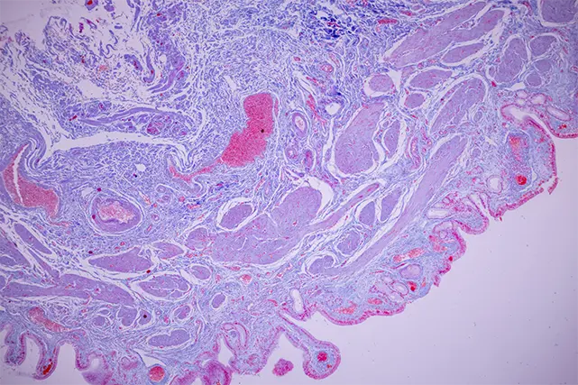

Cancer Screening and Fees
Our cancer screening services help assess your individual cancer risk and support early detection where appropriate. Screening is led by a consultant medical oncologist and begins with a detailed consultation, followed by personalised, evidence-based investigations and clear guidance on next steps.
1
Initial Consultant Consultation
All screening begins with a detailed consultation with our consultant medical oncologist.
During this appointment we review:
- Personal and family medical history
- Lifestyle and relevant risk factors
- Any symptoms or concerns
This consultation forms the foundation of your personalised screening plan, ensuring investigations are appropriate, evidence-based, and tailored to you.
2
Screening Options
A streamlined screening option for reassurance or regular check-ins.
Includes:
- Consultant eligibility assessment
- Specialist multi-cancer early detection blood test
- Consultant review of results and personalised follow-up plan
Suitable for people seeking early reassurance or ongoing monitoring.
Targeted Cancer Screening
From £2,000
Consultant-designed screening focused on specific risk factors, symptoms, or areas of concern.
Includes:
- Oncology consultant review and physical examination
- Targeted investigations based on clinical assessment
- Consultant review of results and personalised follow-up plan
Targeted screening options may include:
- Bowel cancer screening
- Skin cancer checks
- Lung screening for appropriate risk groups
-
Women’s cancer screening
- Breast screening
- Gynaecological screening
- Men’s cancer screening
- Prostate cancer screening
- Testicular cancer screening
Each plan combines appropriate investigations with expert interpretation, avoiding unnecessary or low-value testing.
Comprehensive Cancer Screening
£5,000
A broader screening option for those seeking reassurance or with moderate risk.
Includes:
- Oncology consultant review and physical examination
- Specialist multi-cancer early detection blood test
- Full-body MRI via partner clinics, with additional targeted imaging if indicated
- Colonoscopy
- Consultant review of results and personalised follow-up plan
Optional additional diagnostics may include:
- Hereditary cancer gene panel testing
- Microbiome testing
Hereditary and Family Risk Assessment
For individuals with a family history of cancer or concerns about inherited risk.
Includes:
- Consultant-led risk assessment
- Genetic testing where clinically appropriate
- Review of results and guidance on personalised screening intervals
This service helps clarify risk and supports long-term screening and prevention planning.

3
Results, Follow-up & Prevention
All screening packages include a consultant-led results review.
Your oncology consultant will provide:
- Clear explanation of all results
- Advice on screening intervals and monitoring
- Lifestyle and risk-reduction guidance
- Referrals to specialist services where required
Where appropriate, this may include a personalised prevention and health plan covering diet, lifestyle, sleep, stress, and physical activity, based on current clinical evidence.